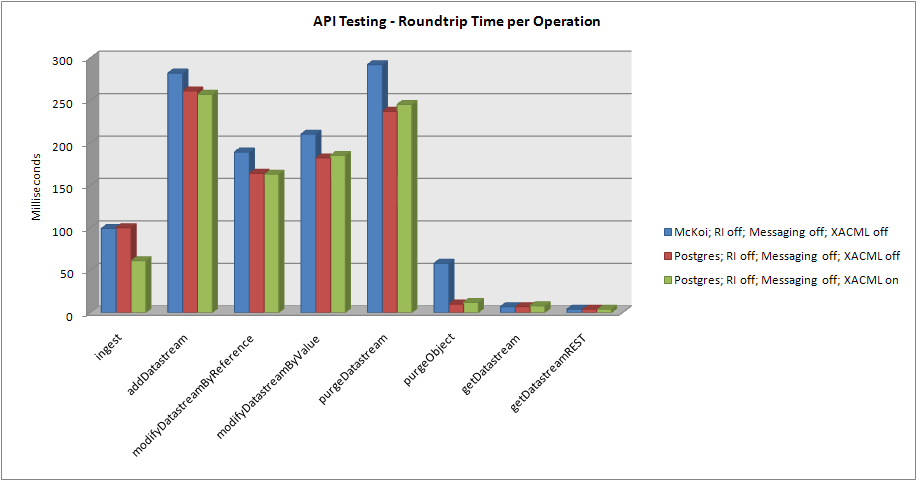
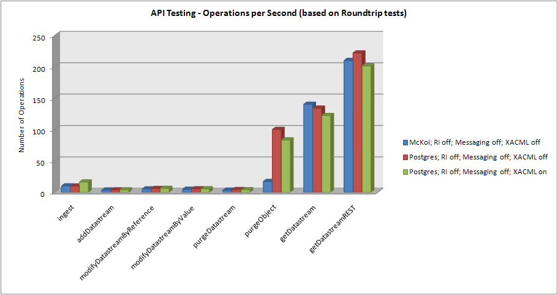
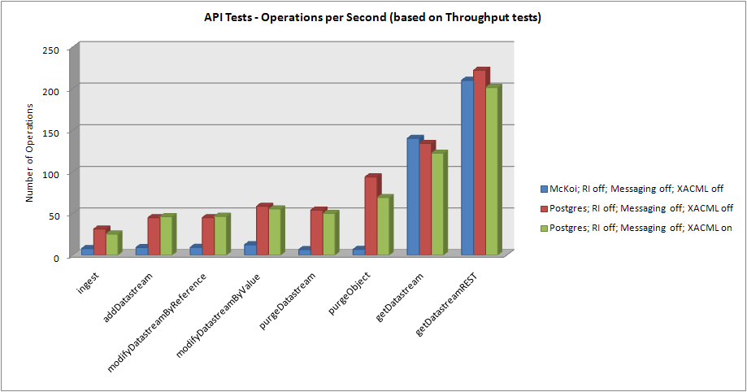
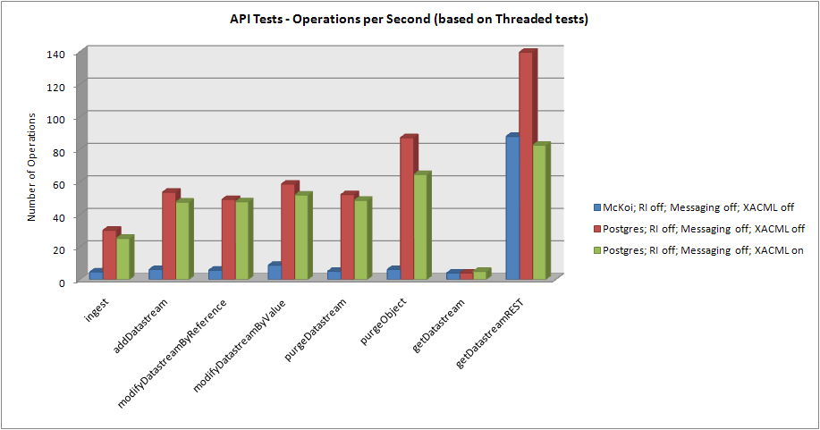

-
Introduction
Fedora 3.0 represents several significant updates to the Fedora codebase,
primarily the addition of the content model architecture. In order to
determine the performance impacts of these changes as well as to discover
how configuration changes impact performance, a suite of tests were added
to the source distribution. These tests are available to aid in understanding
how the Fedora system works as well as to provide a starting point for
performance tuning.
The following test results are available to allow for comparisons with your
Fedora installation. These results currently represent only a limited number
of configuration choices and will be updated in the future to provide a more
complete picture, including both the results of more configuration choices on a
Fedora 3.0 server, as well as comparisons between a 3.0 and a 2.2.x server.
-
Test Environment
Hardware (Desktop PC):
- CPU: (1) Athlon 64 3400+
- Physical Memory: 1.8GB
- Disk: (1) 7200rpm IDE
Software:
- OS: Ubuntu 8.0.4 (64-bit)
- PostgreSQL 8.3 (local instance, fsync=off)
- Java: 1.5.0_15-b04 (64-bit)
All tests were performed on an empty Fedora server. The objects used for testing include:
- 4 "X" (inline XML) datastreams
- 2 "M" (managed) datastreams
- Basic Content Model
- An average FOXML size of 5kb
- Minimal datastream size
-
Test Configuration
Three tests are performed during each run:
-
Round-Trip: Each operation is called and the time required to receive a response
(indicating that the call has completed) is recorded. Each call in the round-trip
test is performed in a consistent repository state, meaning that for each ingest
operation a delete is performed before the next ingest. All calls are made using
the same object and parameters. Only the time to perform the operation in question
is recorded. Times for all iterations are averaged as the result.
-
Throughput: Each operation is called back-to-back with each call being performed
on a different object. A timer is started at the beginning of the test and is stopped
after all calls have been made and returned. The time to perform all operations is
recorded as the result.
-
Threaded: Tests are conducted in the same manner as throughput tests except that
a thread pool is utilized to perform the calls.
Tests were run for each of the following Fedora configurations. These configurations are shown in
the same order and color in the result graphs.
- Using a McKoi database, with the Resource Index OFF, Messaging OFF, and XACML policy enforcement disabled
- Using a PostgreSQL database, with the Resource Index OFF, Messaging OFF, and XACML policy enforcement disabled
- Using a PostgreSQL database, with the Resource Index OFF, Messaging OFF, and XACML policy enforcement enabled
All tests were executed:
- ...using the bundled Tomcat software as the servlet container.
- ...over regular HTTP (not SSL).
- ...with the REST API off.
- ...for 1000 iterations.
- ...using a thread pool size of 10.
-
Running the Tests
The tests are executed by downloading and extracting the source distribution, changing to the newly
extracted directory, and running the following command:
ant performance-tests -Dhost=[HOST] -Dport=[PORT] -Dusername=[USERNAME]
-Dpassword=[PASSWORD] -Diterations=[NUM-ITERATIONS]
-Dthreads=[NUM-THREADS] -Dfile=[OUTPUT-FILE]
-Dname=[TEST-NAME]
where
- HOST = Host on which the Fedora server is running.
- PORT = Port on which the Fedora server APIs can be accessed.
- USERNAME = A fedora user with administrative privileges.
- PASSWORD = The fedora user's password.
- NUM-ITERATIONS = The number of times to perform each operation.
- NUM-THREADS = The number of threads to use in the thread pool when running threaded tests.
- OUTPUT-FILE = The file to which the test results will be written.
If the file does not exist, it will be created. If the
file does exist the new results will be appended.
- TEST-NAME = A name for this test run.
-
Test Results
For raw test results, see Performance Results
which includes the results for all tests in CSV format.
This graph shows the results of the Round-Trip tests, the average time required to perform
each operation, in each configuration (lower is better):

This graph also shows the Round-Trip test results, but in terms of operations per second
(higher is better):

This graph shows the results of the Throughput tests in terms of operations per second
(higher is better):

This graph shows the results of the Threaded tests in terms of operations per second
(higher is better):

-
Previous Reports
For reference, here are the performance test results from the Fedora 2.2 release: